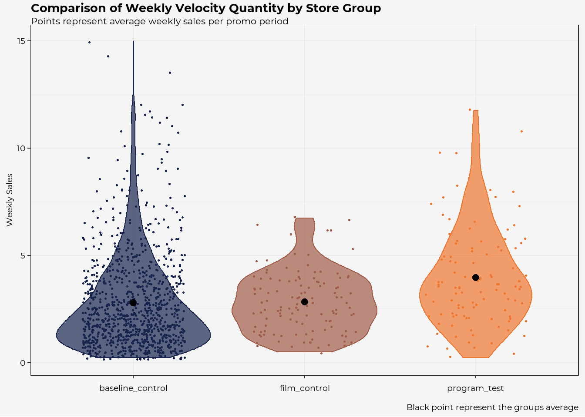

Impact Analysis
Last Updated: 31 January, 2021
Executive Summary
Prompt
Prompt:
Imagine we ran an experiment to test the impact a Loop™ campaign has on sales. The experiment involved 42 stores in 3 groups:
- “Program test” These stores had the full Loop™ campaign as it would normally run, with a display of featured products and a tablet showing 2-3 films in a looping playlist
- “Film control” These stores had the full program but with the film from one brand (“Brewery A”) left out.
- “Baseline control” These stores did not have Loop™ campaigns or featured products on display.
Assume you need to provide an analysis of this experiment under time constraints (in reality, we expect you to devote 2-4 hours to this audition project).
Goal
Goal:
We want to know the impact the Loop™ campaign had on sales. By comparing the different groups we would like to learn a few different things:
- Is there an impact of the “Brewery A” Loop™ Campaign on sales?
- If we see that the “program_test” condition has increased sales as compared to both the baseline and the “film_control” condition we can be confident that it was Brewery A’s film that had the affect on sales and not just the slick Loop™ campaign ipad with the other videos.
- If so what is the impact? (Sales amount vs sales dollars)
Results
Results:
From the analysis we find that:
- Overall the Loop™ campaign looks to had a positive impact on Brewery A’s sales.
- The sales increased year over year for all groups.
- This could mean that the brand awareness for the Brewery has generally increased over time.
- Could be a Covid affect (more people trying beer) or that there were more options made available to customers over time.
- The “program test” both show an increase in the mean sales (both amount and dollars) as compared to the baseline and the film control.
- For this sample, it looks like the Loop™ campaign increased Brewery A sales on average by ~$15 (roughly 1 additional unit) on average as compared to the baseline
Potential Investigation Next Steps:
- It would be interesting in future iterations, to get a more detailed view of what is being purchased. This could potentially help to understand where the campaign leads to the purchase of (perceived) similar products.
- Depending on who the customer is, we might want to calculate the ROI of the Loop™ campaign
- It would be interesting figure out the “0’s” (ie getting total people who went to the store but didn’t buy that beer, helping to understand if they bought different beer/wine).
- With the variations in sales amount vs dollars it would be interesting to get increase visibility to other potential confounding affects (ie sales).
Assumptions
Assumptions: (Note: this section would likely take a different shape as familiarity with the data source increase/ relationship with the customer develops)
With this analysis we are assuming that:
- The type/size of stores are similar for the across the 3 groups. (ie if the groups were stratified by size then the resulting sales could be more a factor of store size and less the campaign)
- The store regions are similar enough (ie the campaign might not be relevant to certain communities or the communities could be in different SES leading to different reactions to the pandemic).
- The potential time of year impact is captured similarly across the 3 groups (ie if beer/wine is most popular during Thanksgiving/ 4th of July, that the store groups capture that time period similarly across groups).
- The beers made available by Brewery A were consistent across stores, and were placed in a relatively similar proximity to the Loop™/ were accessible to the customer.
Summary of Impact
Avg Velocity Amount (Sales $)
When grouping all of the years together by experimental condition (“store_group”), we see that the by-period sales are higher on average when the Loop™ campaign is fully utilized for Brewery A.
To understand if the differences could be due to random chance, we use an ANOVA to see if the differences in the group means are statistically significant. With a resulting p-value of <0.001, we can conclude that the sale dollars are positively impacted by the campaign.
The visual below helps us to understand of the nature of the sale distribution varies for the different conditions.
- For example we see the widest part of the baseline group is around
$30-40indicating that the majority of the sales occur in that range (though sometimes sales exceed $200). - In contrast the widest part of the “program_test” group is above
$50, indicating that a high degree of the average weekly Brewery A sales in stores with the Loop™ are frequently higher than the baseline stores.
| Summary of Average Weekly Sales | |||
|---|---|---|---|
| For Brewery A's Loop Campaign | |||
| Store Group | Group Average | Group SD | Total Periods |
| baseline_control | $49.59 | $39.04 | 989 |
| film_control | $45.96 | $21.98 | 123 |
| program_test | $64.55 | $35.75 | 107 |
Avg Velocity Quantity (Sale Units)
When grouping all of the years together by experimental condition (“store_group”), we see that the by-period sales are higher on average when the Loop™ campaign is fully utilized for Brewery A.
To understand if the differences could be due to random chance, we use an ANOVA to see if the differences in the group means are statistically significant. With a resulting p-value of <0.001, we can conclude that the sale amounts are positively impacted by the campaign.

| Summary of Weekly Units | |||
|---|---|---|---|
| For Brewery A's Loop Campaign | |||
| Store Group | Group Average | Group SD | Total Periods |
| baseline_control | 2.8 | 2.2 | 989 |
| film_control | 2.8 | 1.4 | 123 |
| program_test | 4.0 | 2.3 | 107 |
Next Steps: Sales Over Time
Below we have two different views (“By Year” and “By Period”) of the trends over time to help us as we investigate potential next steps.
By Year
From this view, we can see that within each condition (Store Group) that the average of sales are increasing Year over Year.
- We can see how 2020 produces the highest fliers for baseline group, where in more than a couple instances there are above 10 units on average sold per week.
- These cases likely represent opportunities for us perform a deep time to understand if there are potential best practices/ lessons we could learn from those high volume stores.
- The high average weekly sales in 2020 across the baseline and program stores could also indicate how the Covid pandemic is impact customer choices, but this impact would likely not be understood until we have post pandemic sales data to compare to.
By Period
The chart below is designed to help foster discussion around the potential seasonality impacts on sales dollars (where amounts show a similar pattern).
- It seems like the seasonality patterns of 2018 and 2019 where there general peaks in the summer/ holiday seasons were completely discarded during 2020. As mentioned above, this could very much be a Covid related effect and it will be interesting to see if the prior seasonality returns in 2021/2020.
- If the seasonality returns, it would be interesting to learn more from Brewery A + Store leaders to understand if that corresponds to new releases and/or generally known customer behavior.
Phil Walker
Data Scientist
Greensboro, NC